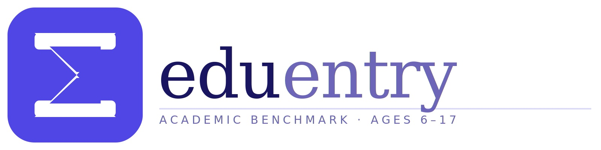

Yurt dışına taşınan Türk ailelerle yaptığım her görüşmede — Dubai'den, Londra'dan, Amsterdam'dan, Singapur'dan arayan annelerden ve babalardan — er ya da geç aynı soruyu duyuyorum:
"Çocuğumun seviyesi yeterli mi? Türkiye'deki okulda iyiydi, ama buraya gelince emin olamadım."
Bu soru görünenden çok daha derin. Çünkü arkasında sadece bir not kaygısı yok — yabancı bir eğitim sisteminde görünmez hissetmenin, kıyaslayacak bir referans noktası bulamamanın verdiği o derin belirsizlik var.
TÜİK verilerine göre yurt dışında yaşayan Türk vatandaşı sayısı 5,5 milyonu aşmış durumda. Bu ailelerin büyük çoğunluğu çocuklarının akademik durumunu değerlendirmeye çalışırken ortak bir sorunla karşılaşıyor: Türkiye'deki karne notları evrensel bir dile çevrilemiyor. "5 üzerinden 4 aldı" bilgisi, İngiliz, Amerikan veya IB müfredatlı bir okulda hangi seviyeye denk geldiğini söylemiyor. Bu boşluk hem okul seçimini hem de ilerleme takibini son derece güçleştiriyor.
Bu yazıda size bu soruna somut bir çözüm getiren bir araçtan bahsedeceğim: Eduentry. Çocuğunuzun bilişsel güçlü ve zayıf yönlerini anlamak istiyorsanız akademik profilin nasıl ölçüleceğini açıklayan rehberimize bakabilirsiniz; genel eğitim kalitesinin uluslararası tablosunu görmek içinse PISA nedir ve Türkiye sonuçları ne anlama geliyor yazımız iyi bir başlangıç noktasıdır.
Eduentry Nedir?

Eduentry, 6-17 yaş arası çocuklar için tasarlanmış, ücretsiz bir uluslararası akademik değerlendirme platformu. Yurt dışına taşınan, taşınmayı planlayan ya da çocuğunun global standartlarda nerede durduğunu öğrenmek isteyen aileler için özellikle değerli buluyorum.
Platform dört temel alanda ölçüm yapıyor:
- İngilizce — Okuduğunu anlama, dilbilgisi, kelime hazinesi. Özellikle Türkiye'de okul İngilizcesi görmüş ama akademik İngilizceye henüz geçmemiş çocuklar için kritik bir alan.
- Matematik — Sayısal işlemler, cebir, geometri. Matematik dil bağımsız gibi görünse de müfredatlar arasındaki yaklaşım farkları burada da kendini gösteriyor.
- Sözel Akıl Yürütme — Kelimelerle problem çözme. Yeni dile geçiş sürecinde en çok zorlanılan alan genellikle bu.
- Sözel Olmayan Akıl Yürütme — Şekil ve örüntü tanıma. Dil bağımsız bu alan, çocuğun genel bilişsel kapasitesini ölçüyor ve çoğu zaman en güvenilir gösterge haline geliyor.
Testin en güçlü yanı şu: sonuçlar sadece "kaç doğru yaptı" değil, çocuğunuzun dünya genelindeki akranlarına göre nerede durduğunu gösteriyor. Bunun için dört uluslararası sisteme göre karşılaştırma yapıyor. Ölçüm metodolojisi ve skor bantları hakkında detaylı bilgi →
Çocuğunuzun dünya genelindeki yerini öğrenin
Ücretsiz, kayıt gerektiren, 60-90 dakikalık adaptif test.
Neden Önemli? — Karnenin Söyleyemedikleri
Uluslararası okul araştırması yapan aileler için "çocuğum hangi sınıfa girecek?" sorusu sandığından çok daha karmaşık. Çünkü her ülkenin eğitim sistemi yaş-sınıf uyumunu farklı kuruyor, her müfredat farklı bir beklenti listesi tanımlıyor ve okullar arası akademik seviye farkı büyük şehirlerde bile dramatik biçimde değişebiliyor.
Pek çok araştırma, uluslararası okula geçiş yapan çocukların ilk dönemde hem akademik hem de sosyal baskı altında olduğunu ortaya koyuyor. Bu geçişi en zorlaştıran faktörlerden biri, çocuğun gerçekte nerede durduğunu bilmeden yola çıkmak. Bilgi yoksa destek planı da kurulamıyor.
Eduentry tam bu boşluğu dolduruyor. Bir çocuk testi tamamladığında ailenin önüne gelen rapor şunları içeriyor:
- Standart skor — Ortalama 100, standart sapma 15 skalasında. PISA ile aynı ölçek; bir eğitim danışmanına, okul müdürüne veya sınıf öğretmenine gösterdiğinizde evrensel olarak anlaşılır.
- Yüzdelik dilim — Çocuğunuz aynı yaştaki akranlarının yüzde kaçının önünde?
- Konu bazlı güçlü ve zayıf alanlar — Hangi konularda destek gerekiyor, hangi alanlarda öne çıkıyor?
- Dört uluslararası çerçeveye göre karşılaştırma — UK Ulusal Müfredatı, ABD sınıf seviyeleri, PISA standartları ve IB programı.
- Yapay zeka destekli kişisel çalışma önerileri — Skor raporu almakla kalmıyor, ne yapmanız gerektiğini de söylüyor.
Dört Uluslararası Çerçeve: Ne Anlama Geliyorlar?
Birçok aile için en değerli kısım bu.
| Sistem | Ne anlama geliyor? |
|---|---|
| UK Ulusal Müfredatı | İngiltere'deki sınıf seviyelerine ve 11+ ile GCSE sınavlarına göre konumlandırma. Çocuğunuzu İngiltere'de veya İngiliz müfredatlı bir okulda okutmayı planlıyorsanız bu çerçeve doğrudan işe yarıyor. |
| ABD Sınıf Seviyeleri | Amerika'daki grade beklentilerine göre karşılaştırma. ABD'ye taşınmayı düşünen ya da Amerikan müfredatlı okul araştıran aileler için başlangıç noktası. |
| PISA | OECD'nin 79 ülkede uyguladığı uluslararası yetkinlik standartları. Türkiye de PISA değerlendirmelerine katılıyor; bu çerçeve hem küresel hem de Türkiye içi karşılaştırma için referans veriyor. |
| IB (Uluslararası Bakalorya) | IB programına hazırlık düzeyi. Dubai, Londra, Amsterdam, Singapur gibi şehirlerdeki pek çok prestijli uluslararası okul IB müfredatı uyguluyor. |
Çocuğunuzun bu programlara ne kadar hazır olduğunu görmek, okul görüşmelerine çok farklı bir özgüvenle girmenizi sağlıyor.
Arkasındaki Bilim
Eduentry'yi rasgele bir online quiz'den ayıran şey, ölçüm metodolojisi.
2 Parametreli Madde Tepki Teorisi (2PL IRT)
Aynı model PISA, SAT ve GCSE'de kullanılıyor. Her sorunun kalibre edilmiş bir zorluk ve ayrım değeri var. Skor, sadece kaç sorunun doğru cevaplandığına değil, hangi zorluk seviyesindeki soruların doğru cevaplandığına göre belirleniyor. Bu, "şans" faktörünü büyük ölçüde elemine ediyor.
Gerçek Zamanlı Adaptif Algoritma (CAT — Bilgisayar Destekli Adaptif Test)
Sistem her cevaptan sonra çocuğun yetenek tahminini güncelliyor ve en doğru ölçümü sağlayacak bir sonraki soruyu seçiyor. Doğru cevap verince daha zor, yanlış cevap verince daha kolay bir soru geliyor. Bu hem daha hassas bir ölçüm sağlıyor hem de çocuğun gereksiz yere zorlanmasını ya da sıkılmasını önlüyor.
MAP Tahmini (Bayes Skorlama)
Sonuçlar olasılıksal bir yöntemle hesaplanıyor. Bu, daha az soruyla çok daha hassas bir ölçüm yapılmasını sağlıyor.
Pratik anlamı şu: yaklaşık 60 soru ile geleneksel uzun sınavlara kıyasla çok daha güvenilir bir veri elde ediliyor. Çocuk bunları kendi hızında, evde tamamlayabiliyor. Ortalama süre 60-90 dakika; araya mola vermek mümkün, ilerleme Eduentry platformunda otomatik kaydediliyor.
Benim Danışmanlık Pratiğimde Eduentry
Yüzlerce Türk aileyle çalışırken fark ettim ki "hangi okul" sorusu aslında "hangi seviye" sorusunu içeriyor. Ve "hangi seviye" sorusu, elinde veri olmadan cevaplanamıyor. Eduentry'yi şu dört durumda öneriyorum:
Yurt dışına taşınmadan önce: Mevcut seviyeyi netleştirmek, hangi ülkeye gidilirse gidilsin doğru okul kademesine ve programına yerleştirme kararını kolaylaştırıyor. Boşlukları görmek, taşınmadan önce kapatma fırsatı veriyor.
Okul seçimi sürecinde: Bazı uluslararası okulların giriş değerlendirmeleri var. Eduentry sonuçları hem ailenin beklentisini gerçekçi kılıyor hem de okul mülakatına hazırlık sağlıyor. "Çocuğumun seviyesi bu okul için uygun mu?" sorusuna veriyle yanıt veriyorsunuz.
Okula başladıktan sonra: Her 4-6 haftada bir tekrar edilebiliyor. İlerleme somut olarak görünüyor — "bir şeyler öğreniyor herhalde" hissi yerine gerçek veri.
Yurt dışı üniversite hazırlığında: Uluslararası çerçevelerle karşılaştırma, hedef belirlemeyi çok daha gerçekçi kılıyor. Hangi alanda ne kadar çalışmak gerektiğini erkenden görmek, lise sürecini daha verimli kullanmak anlamına geliyor.
"Ücretsiz mi, Gerçekten?"
Bu soruyu her zaman alıyorum. Evet, ücretsiz. Kayıt ücretsiz, test ücretsiz, rapor ücretsiz. Abonelik yok, gizli ücret yok.
Türkiye'de bir özel gelişim testi 500-1.500 TL arasında değişiyor. Yurt dışında benzer uluslararası değerlendirmeler genellikle 100-300 dolar arasında fiyatlandırılıyor. Eduentry bu kalitede bir veriyi ücretsiz sunuyor — ve kullandıklarım arasında metodolojik olarak en güvenilir platform olduğunu söyleyebilirim.
Buradan ücretsiz hesap açabilirsiniz →
Bir Şeyi Netleştirelim
Eduentry bir sihirli değnek değil. Bir test sonucu, çocuğunuz hakkındaki tüm gerçeği söyleyemiyor. Motivasyon, adaptasyon kapasitesi, sosyal uyum, dil gelişimi — bunların hiçbiri bir skor raporuna sığmıyor.
Ama elimde veri olmadan aile görüşmesi yapmak, harita olmadan şehir gezmek gibi. Pusula olmak zorunda değil — ama başlangıç noktasını görmek, sonraki adımı planlamayı çok daha somut kılıyor.
Sonuç
Yurt dışındaki okul yolculuğu çok fazla belirsizlik içeriyor. Hangi ülke, hangi okul, hangi müfredat, hangi seviye — bunların hepsi aynı anda üstünüze yığılıyor.
Eduentry bu belirsizliğin bir parçasını ortadan kaldırıyor: en azından çocuğunuzun akademik olarak nerede durduğunu somut bir veriyle görüyorsunuz.
Ücretsiz olduğu için denemekten kaybedecek hiçbir şeyiniz yok.